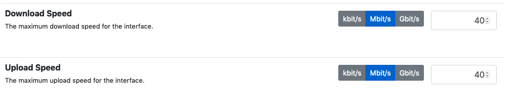
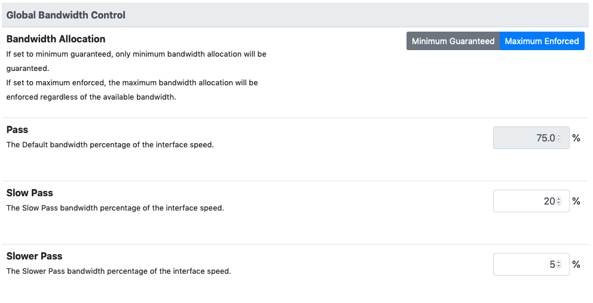
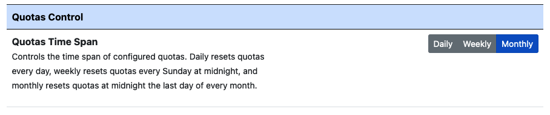

Контроль пропускной способности
nEdge предоставляет широкие возможности управления полосой пропускания для каждого пользователя и каждого протокола. Это краткий обзор доступных функций:
Ограничить глобальную доступную пропускную способность
Резервирование полосы пропускания для конкретного пользователя
Обеспечьте 3 различных класса пропускной способности: по умолчанию, медленный проход, медленный проход.
Ограничить пропускную способность каждого хоста
Класс пропускной способности может быть назначен конкретному пользовательскому протоколу/категории через политики пользователей.
Скорость интерфейса
Глобальную доступную пропускную способность можно настроить для каждого интерфейса отдельно. в Конфигурация интерфейсов раздел скорость интерфейса указывает, что глобально доступная полоса пропускания для трафика, поступающего из/в указанный интерфейс.

Конфигурация скорости загрузки и выгрузки интерфейса
На картинке выше трафик, проходящий через интерфейс, будет ограничен. до 10 Mbit/с как в направлении загрузки, так и в направлении скачивания. Обычно скорость интерфейса должно соответствовать доступной пропускной способности Интернета.
Глобальный контроль пропускной способности
После настройки скоростей интерфейсов можно точно настроить пропускную способность. распределение с помощью классов пропускной способности. nEdge предоставляет 3 настраиваемых классы пропускной способности. Глобальные классы пропускной способности можно настроить из Глобальный контроль пропускной способности настройки.

Конфигурация глобальных классов пропускной способности
Процентная ставка может быть указана для каждого доступного класса. Процент относится к скорости настроенных интерфейсов. Например, предположим, что nEdge режиме маршрутизации и с двумя настроенными интерфейсами WAN, один со скоростью загрузки 10 Mbit/с и другой со скоростью загрузки 100 Mbit/с, скорость 75% ограничит клиенты скачивают трафик со скоростью 7,5 Mbit/с при выходе на первый интерфейс, и до 75 Mbit/с трафика при выходе на интерфейс 100 Mbit/с.
Важно отметить, что по умолчанию глобальные классы пропускной способности не ограничивают трафик. заранее, а скорее указать долю распределения между классами. Это означает, что класс 75% будет гарантировать минимум Распределение полосы пропускания 75 %, когда потребность в пропускной способности сети высока, но это не помешает клиентам получить 100% полоса пропускания, когда такая полоса пропускания доступна. Это Минимальный гарантированный пропускная способность политика распределения.
Чтобы заранее ограничить пропускную способность клиентов, Максимальное принудительное применение пропускная способность Вместо этого можно использовать политику распределения.
Управление полосой пропускания для каждого хоста
В nEdge также можно определить максимальную скорость для каждого хоста. Эта настройка не зависят от настроенной скорости интерфейса, поэтому используется абсолютная скорость.

Конфигурация классов пропускной способности для каждого хоста
Например, установив максимальную скорость 1 Mbit/с на По умолчанию класс, трафик каждый хост с По умолчанию класс будет ограничен 1 Mbit/с.
Справедливая пропускная способность
В пределах одного класса пропускной способности nEdge распределит доступную пропускную способность между хостами. честным путем. Например, когда два разных хоста принадлежат По умолчанию класс, им будет гарантирована минимальная доля в 50% По умолчанию пропускная способность класса. Если хозяева если их три, то будет гарантировано 33% пропускной способности класса, если их четыре — 25% и так далее.
Квоты
nEdge поддерживает квоты для каждого пользователя и для каждого приложения. Квоты можно настроить как по времени, так и по объему трафика.
При превышении квоты пользователь не может осуществлять дополнительный трафик. Квоты могут быть ежедневными, еженедельными или ежемесячными:
Дневная квота сбрасывается каждый день в полночь.
Недельная квота сбрасывается каждую неделю в воскресенье в полночь.
Ежемесячная квота сбрасывается каждый последний день месяца в полночь.
Сброс квот можно настроить в настройках системы в разделе «Контроль пропускной способности».

Конфигурация квот